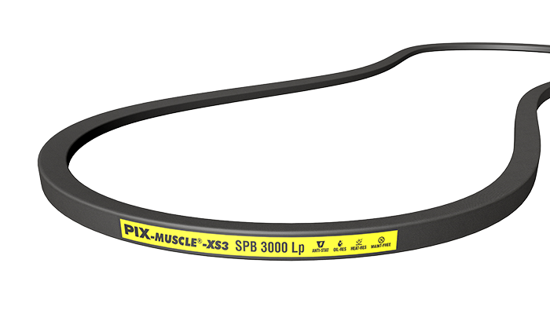
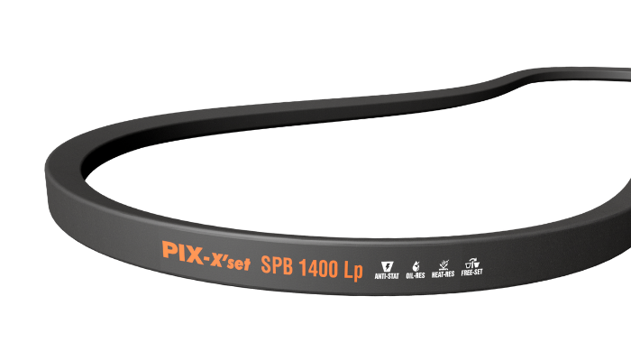
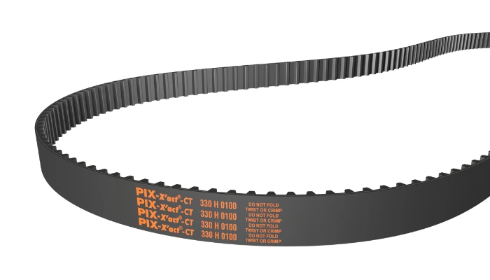
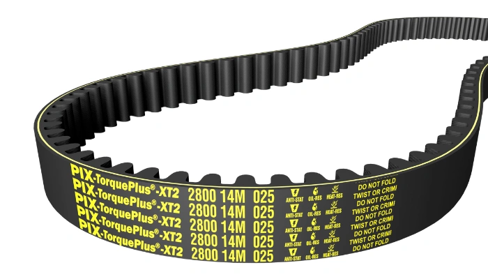
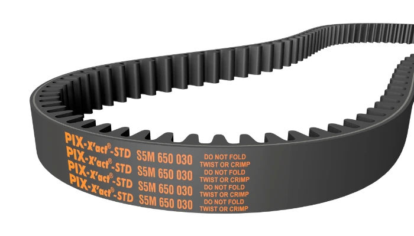
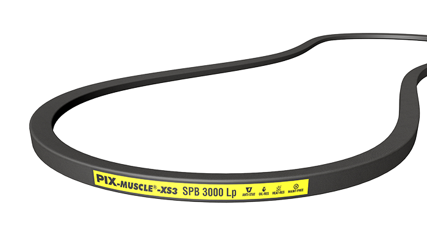
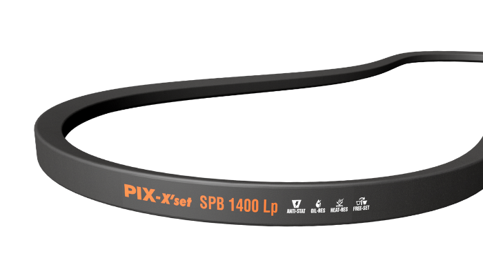
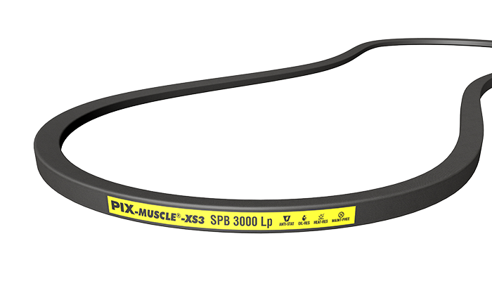
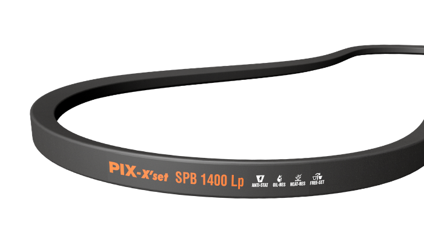

Ball bearings are designed to reduce friction between rotating parts and
are widely used in motors, pumps, and industrial machinery for smooth and
efficient operation.At Classic Bearings wide range of industrial ball bearing are available
at a very reasonable price.
Roller Bearings
Roller bearings are suitable for heavy load applications and provide
high radial load capacity in industrial and mechanical systems.At Classic Bearings wide range of industrial roller bearing are
available at a very reasonable price.
Taper Bearings
Taper roller bearings are engineered to handle combined radial and axial
loads and are commonly used in automotive and heavy machinery applications.At Classic Bearings wide range of Roller Bearings
are available at a very reasonable price.
B.Belts
V-Belts
V-belts are widely used for power transmission in industrial machines,
offering high efficiency, durability, and reliable performance.Classic Bearings as a distributor of PIX belts
provide a wide range of V belts at a very reasonable and cheap rate.


Timing Belts
Timing belts ensure synchronized movement of machine components and are
commonly used in precision-driven industrial applications.Classic Bearings as a distributor of PIX belts
provide a wide range of Timing belts at a very reasonable and cheap rate



C.Oil Seals
Oil Seals
Oil seals are used to prevent leakage of lubricants and to protect machinery
from dust, dirt, and contaminants, ensuring smooth operation and long service life.
Classic Bearings offers a wide range of industrial oil seals at reasonable prices.


 


